O que dizer, o que mostrar e onde ter cuidado em cada um dos 21 slides — para apresentar com segurança, sem ler a tela.
Paradigmas de Linguagens de Programação · UFAL — Campus Arapiraca
Prof. Thiago de Sales · Thalia Oliveira · novembro de 2026
Roteiro de apresentação · Harness para agentes de IA
Antes de começar
Como usar este roteiro
Ele acompanha a apresentação slide a slide, na mesma ordem. As falas são sugestões: leia-as antes, entenda a ideia e diga com as suas palavras.
Cada slide tem cinco partes:
Objetivo: a única ideia que a turma precisa levar daquele slide.
Fala sugerida: um texto natural, em primeira pessoa, que cobre o slide em cerca do tempo indicado.
O que mostrar: para onde apontar na tela enquanto fala.
Atenção técnica: os detalhes que o professor pode perguntar e que vale ter claros na cabeça.
Transição: a frase que liga ao próximo slide e mantém o fio da história.
A história em uma frase
Construímos um harness que ensina e cobra programação reativa de um agente de IA; o mesmo agente implementou a mesma API três vezes sem e três vezes com o harness; sem harness ele sempre acertou o comportamento mas errou o paradigma (14 violações, 1 correção por execução); com harness acertou os dois de primeira (0 violações, 0 correções).
Tempo sugerido (≈ 19 minutos + perguntas)
Slides
Parte
Tempo
1–2
Abertura e roteiro
1 min
3–4
01 · O problema e o desafio
2 min
5–7
02 · Fundamentos: harness e programação reativa
3 min 30 s
8–13
03 · O que construímos: tarefa, arquitetura e harness
5 min 30 s
14–15
04 · O experimento e o instrumento de medida
2 min 15 s
16–19
05 · Resultados
3 min 30 s
20–21
Conclusão e encerramento
1 min
Se o tempo apertar
Passe rápido pelo slide 12 (as 9 regras): cite RX04, RX02 e RX07 — as que aparecem nos resultados — e siga.
Nunca corte os slides 16 e 17: são o coração dos resultados.
Três números para ter de cabeça
41/41 testes de aceitação passaram em todas as 6 execuções, já na primeira entrega.
14 × 0 violações arquiteturais na primeira entrega (A1 = 4, A2 = 7, A3 = 3; todas as B = 0).
1 × 0 intervenção humana por execução (todas as A precisaram de uma rodada de correção; nenhuma B).
Abertura
Slides 1 e 2
Apresente-se e diga, logo de cara, qual pergunta o trabalho responde.
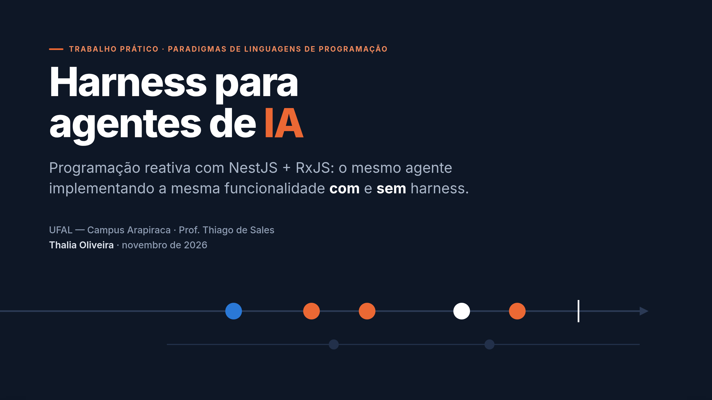
Slide 1
Capa — Harness para agentes de IA
30 s
Objetivo: situar o trabalho e despertar a pergunta central.
Fala sugerida
“Bom dia. Meu trabalho é sobre como fazer um agente de IA programar do jeito que o projeto quer — no nosso caso, com programação reativa.
A pergunta é simples: se eu der para o agente um repositório com instruções, regras e verificações automáticas — o tal harness —, ele erra menos, viola menos a arquitetura e precisa de menos ajuda humana? Para responder, eu coloquei o mesmo agente para fazer a mesma tarefa com e sem esse harness e medi.”
O que mostrar
A linha com bolinhas embaixo é um diagrama de bolinhas (marble diagram), o jeito clássico de desenhar fluxos no RxJS. Ele volta ao longo da apresentação.
“Vou seguir este caminho em cinco partes.”
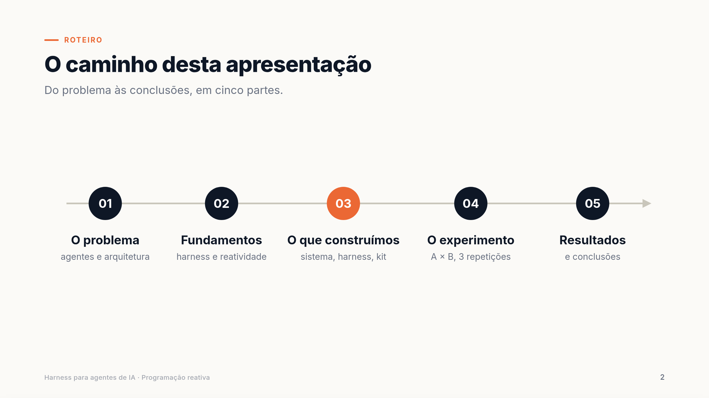
Slide 2
O caminho desta apresentação
20 s
Objetivo: dar o mapa para a turma saber onde está.
Fala sugerida
“Primeiro o problema; depois os dois fundamentos — o que é um harness e o que é programação reativa; depois o que eu construí; como foi o experimento; e por fim os resultados e o que eles significam.”
“Começando pelo problema.”
01 · O problema
Slides 3 e 4
Mostre que “funcionar” não é o mesmo que “estar no paradigma certo”. É essa distância que o harness tenta fechar.
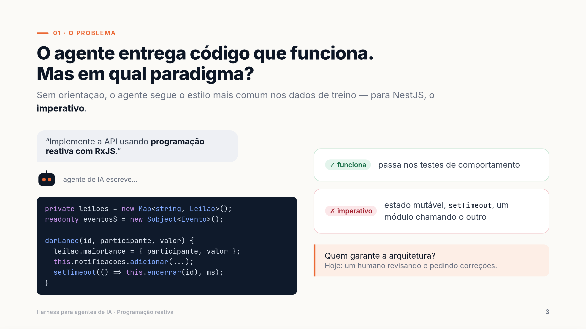
Slide 3
O agente entrega código que funciona. Mas em qual paradigma?
1 min
Objetivo: mostrar que o agente tende ao estilo imperativo mesmo quando pedimos reativo.
Fala sugerida
“Hoje os agentes de programação — Claude Code, Copilot, Cursor — já escrevem código que funciona. Mas eles seguem o estilo mais comum nos dados de treino, e para NestJS o mais comum é o imperativo.
Olhem este trecho: o pedido foi ‘use programação reativa com RxJS’, e o código até importa um Subject. Mas o estado está num Map que é alterado à mão, o encerramento usa setTimeout, e o serviço de leilões chama direto o serviço de notificações. Funciona — passa nos testes — mas não é reativo.
E aí vem a pergunta: quem garante a arquitetura? Normalmente, um humano revisando o código e pedindo correção.”
O que mostrar
As três linhas problemáticas do código: new Map, a atribuição leilao.maiorLance = … e o setTimeout.
Os dois cartões: verde (“funciona”) e vermelho (“imperativo”).
Esse código não foi inventado: é um resumo do anti-gabarito (avaliacao/anti-gabarito/), a implementação imperativa que eu escrevi para validar o instrumento. Nas execuções reais sem harness o padrão foi parecido: Map mutável e subscribe criado a cada leilão.
“É exatamente isso que o enunciado pede para investigar.”
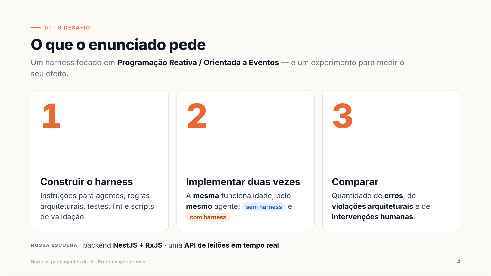
Slide 4
O que o enunciado pede
1 min
Objetivo: deixar claro que o trabalho tem duas metades — construir e medir.
Fala sugerida
“O enunciado tem três passos. Um: construir um harness focado em programação reativa e orientada a eventos — com instruções para agentes, regras arquiteturais, testes, lint e scripts de validação. Dois: implementar a mesma funcionalidade com e sem esse harness. Três: comparar três coisas — erros, violações arquiteturais e intervenções humanas.
O enunciado deixava escolher frontend ou backend. Eu escolhi backend, com NestJS e RxJS, e a funcionalidade é uma API de leilões em tempo real.”
Por que backend? (ADR-001) Testes de API são simples e estáveis (HTTP + JSON); o NestJS já usa RxJS nativamente (controllers podem devolver Observable, SSE pronto); regras de arquitetura de backend são verificáveis por ferramenta; e as métricas ficam objetivas.
“Antes de mostrar o que construí, dois conceitos. Primeiro: o que é, afinal, um harness?”
02 · Fundamentos
Slides 5 a 7
Dois conceitos que sustentam todo o resto: harness (guiar, verificar, forçar o ciclo) e programação reativa (Observer, streams, Crie · Combine · Ouça).
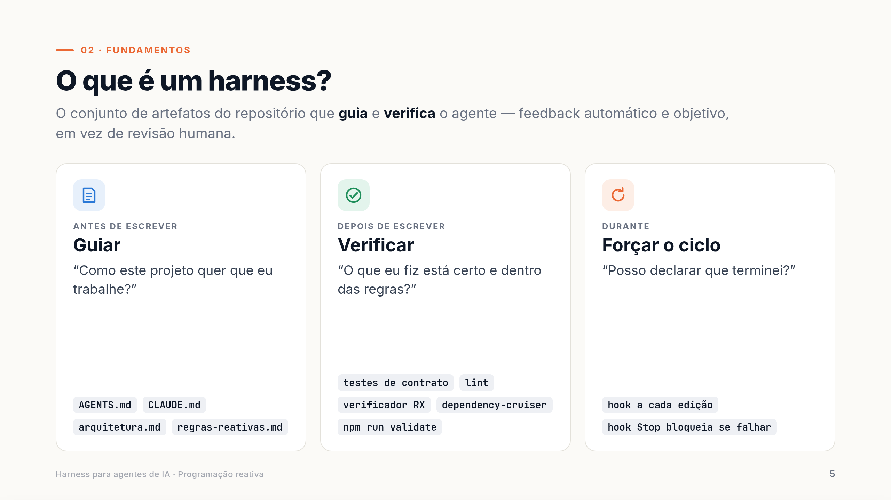
Slide 5
O que é um harness?
1 min
Objetivo: definir harness pelos seus três papéis.
Fala sugerida
“Harness, ao pé da letra, é o arreio — o equipamento que conduz. Aqui, é o conjunto de arquivos do repositório que guia e verifica o agente.
Ele tem três papéis. Guiar, antes de escrever: arquivos como o AGENTS.md dizem ao agente como o projeto quer que ele trabalhe. Verificar, depois de escrever: testes, lint e verificadores dizem se o que ele fez está certo. E forçar o ciclo, durante: os hooks do Claude Code rodam a verificação automaticamente e não deixam o agente dizer ‘terminei’ enquanto a validação falha.
A ideia central é trocar o humano revisando por um feedback automático e objetivo vindo do próprio repositório.”
AGENTS.md é uma convenção lida por vários agentes; o CLAUDE.md é o arquivo específico do Claude Code — no harness ele só importa o AGENTS.md (@AGENTS.md) e acrescenta duas regras sobre os hooks.
Hook é um comando que o Claude Code executa automaticamente em certos momentos (depois de usar uma ferramenta, ao tentar encerrar, ao receber um prompt).
“O segundo conceito é o paradigma que o harness quer impor: o reativo.”
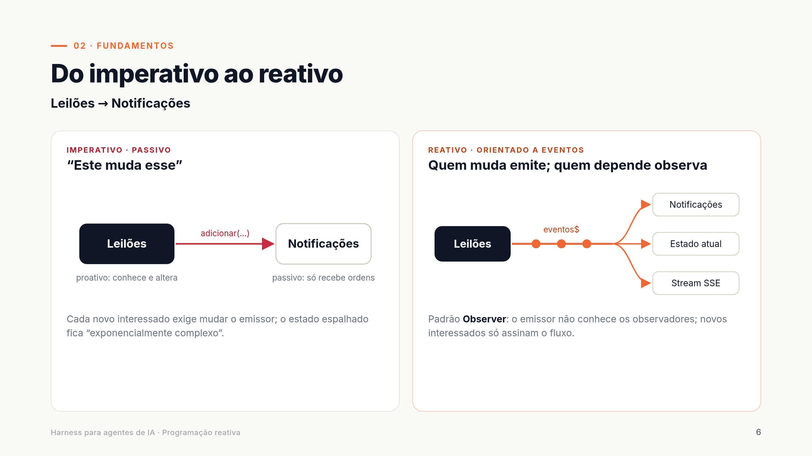
Slide 6
Do imperativo ao reativo
1 min 15 s
Objetivo: ligar o exemplo das aulas (Carrinho → Fatura) ao do trabalho (Leilões → Notificações).
Fala sugerida
“Nas aulas vimos o caso Carrinho e Fatura. No estilo imperativo, o carrinho é proativo: ele chama a fatura e muda ela — ‘este muda esse’. A fatura é passiva e nem sabe de quem depende. Cada novo interessado obriga a mexer no carrinho, e o estado espalhado fica exponencialmente complexo.
No meu sistema o par equivalente é Leilões e Notificações. No estilo imperativo, quando um lance é aceito, o serviço de leilões chama notificacoes.adicionar(...). No reativo, leilões só emite eventos num fluxo, o eventos$; notificações, o estado atual e o stream em tempo real observam esse fluxo e se atualizam sozinhos. É o padrão Observer: quem muda não conhece quem reage.”
O que mostrar
A seta vermelha única do lado esquerdo (acoplamento direto) contra o fluxo com três saídas do lado direito.
O $ no fim do nome (eventos$) é só uma convenção do RxJS para indicar “isto é um Observable”.
“E como se monta esse fluxo? A aula resume em três verbos.”
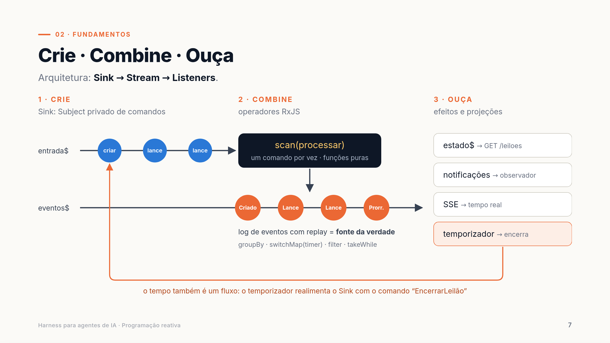
Slide 7
Crie · Combine · Ouça
1 min 15 s
Objetivo: mostrar o vocabulário da aula (Sink, Stream, Listeners) aplicado ao sistema.
Fala sugerida
“A aula de programação reativa termina com três verbos: crie, combine, ouça.
Crie: os comandos — criar leilão, dar lance — entram por um Sink, que é um Subject privado. Combine: um operador scan processa um comando por vez, usando funções puras, e produz eventos. Esses eventos formam um log com replay, que é a fonte da verdade. Ouça: o estado atual, as notificações, o stream em tempo real e o temporizador são ouvintes desse log.
Repare na seta laranja embaixo: até o tempo é um fluxo. Quando o prazo de um leilão chega, o temporizador devolve ao Sink um comando ‘encerrar leilão’, que passa pelo mesmo caminho de qualquer outro comando.”
Por que scan resolve concorrência? O scan recebe um valor por vez, na ordem de chegada, e carrega o estado anterior. Vinte lances simultâneos viram vinte comandos processados em fila — não há duas atualizações ao mesmo tempo sobre o mesmo estado. A suíte oculta tem um teste exatamente com 20 lances simultâneos.
Replay: quem assina o log depois recebe todos os eventos anteriores (shareReplay). É o que permite o SSE mandar o histórico completo assim que o cliente conecta.
“Com esses dois conceitos, vamos ao que foi construído — começando pela tarefa que o agente recebeu.”
03 · O que construímos
Slides 8 a 13
A tarefa, a prova de que testes não enxergam paradigma, a arquitetura exigida e as peças do harness.
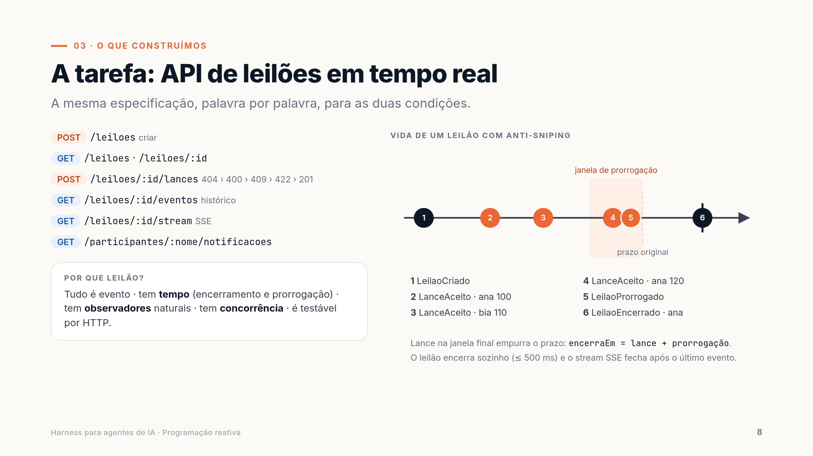
Slide 8
A tarefa: API de leilões em tempo real
1 min
Objetivo: mostrar que a tarefa é pequena, mas cheia de eventos, tempo e concorrência.
Fala sugerida
“A tarefa entregue ao agente é uma especificação de cerca de 150 linhas, idêntica nas duas condições. São seis rotas: criar e consultar leilões, dar lance, ver o histórico de eventos, acompanhar em tempo real por SSE e consultar as notificações de um participante.
O lado direito mostra a vida de um leilão: ele é criado, recebe lances e, se um lance chega na janela final — o anti-sniping —, o prazo é empurrado e sai um evento LeilaoProrrogado. No fim, o leilão encerra sozinho, sem nenhuma requisição.
Escolhi leilão porque tudo é evento, tem tempo, tem observadores naturais, tem concorrência e dá para testar tudo de fora, por HTTP.”
Ordem das regras do lance (cai em prova!): 404 (leilão inexistente) → 400 (corpo inválido) → 409 (encerrado) → 422 (já lidera ou abaixo do mínimo) → 201 (aceito). Respostas 400, 404 e 409 não geram eventos; os 422 geram LanceRejeitado.
SSE (Server-Sent Events): uma conexão HTTP que fica aberta e por onde o servidor empurra mensagens. Aqui ela manda o histórico, depois cada novo evento, e fecha após o LeilaoEncerrado.
“Antes de usar agentes, eu precisei provar que dá para medir paradigma. Para isso escrevi duas soluções.”
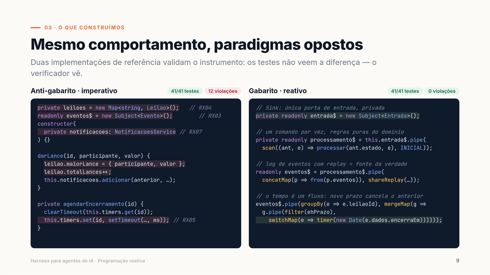
Slide 9
Mesmo comportamento, paradigmas opostos
1 min 15 s
Objetivo: provar que os testes funcionais não distinguem os paradigmas — e o verificador sim.
Fala sugerida
“Estas são as duas implementações de referência. À esquerda, o anti-gabarito, imperativo: Map mutável, Subject público, leilões conhecendo notificações e setTimeout. À direita, o gabarito, reativo: Sink privado, scan, log de eventos com replay e o tempo como fluxo com switchMap e timer.
As duas passam nos mesmos 41 testes. O que separa uma da outra é o verificador de regras: 12 violações num lado, zero no outro. Ou seja: se eu medisse só testes, não veria diferença nenhuma. Guardem isso, porque é exatamente o que aparece nos resultados.”
O que mostrar
As linhas destacadas em vermelho (violações) à esquerda e em verde à direita.
O switchMap(e => timer(...)) no fim do gabarito: o novo prazo cancela automaticamente o temporizador anterior — é a prorrogação sem clearTimeout.
As 12 violações do anti-gabarito: RX02 ×1, RX03 ×1, RX04 ×5, RX05 ×3 e RX07 ×2.
“Vamos ver a arquitetura reativa completa, que é o que o harness pede ao agente.”
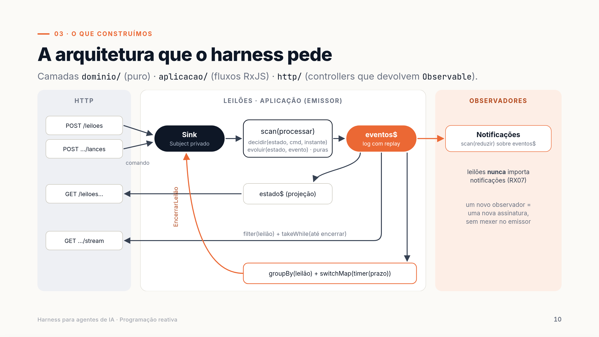
Slide 10
A arquitetura que o harness pede
1 min 15 s
Objetivo: percorrer o caminho de um comando, do HTTP aos observadores.
Fala sugerida
“Vou seguir um lance. Ele chega no controller, que valida a entrada e manda um comando para o Sink. O scan chama duas funções puras do domínio: decidir, que diz quais eventos o comando gera, e evoluir, que aplica o evento ao estado. Os eventos vão para o log, o eventos$.
Daí em diante, tudo é projeção: o estado$ responde aos GETs; o stream SSE filtra os eventos daquele leilão e termina quando ele encerra; o temporizador agrupa por leilão e reagenda o encerramento a cada prorrogação, realimentando o Sink. E, à direita, Notificações é um observador em outro módulo: leilões nunca importa notificações.”
Camadas:dominio/ só tem tipos e funções puras (sem NestJS, sem RxJS, sem Date.now() — o instante chega por parâmetro, o que deixa o tempo testável); aplicacao/ tem os fluxos RxJS; http/ tem os controllers, que devolvem Observable e deixam o NestJS assinar.
groupBy + switchMap: o groupBy cria um sub-fluxo por leilão; dentro dele, cada novo prazo (criação ou prorrogação) entra no switchMap, que cancela o timer anterior e começa outro.
“Para o agente chegar nisso sozinho, o repositório precisa ensinar e cobrar. Essas são as peças do harness.”
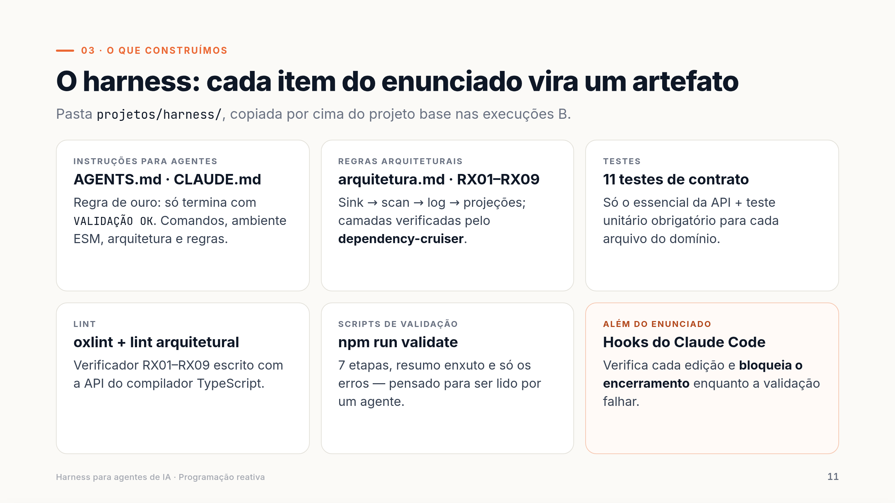
Slide 11
O harness: cada item do enunciado vira um artefato
1 min
Objetivo: mostrar que cada exigência do enunciado tem um artefato concreto.
Fala sugerida
“Cada item do enunciado virou um artefato. As instruções para agentes são o AGENTS.md e o CLAUDE.md, com uma regra de ouro: a tarefa só termina quando npm run validate imprime ‘VALIDAÇÃO OK’. As regras arquiteturais estão em dois documentos e são verificadas pelo dependency-cruiser. Os testes são 11 testes de contrato da API, e o harness exige teste unitário para cada arquivo do domínio. O lint é o oxlint mais um lint arquitetural que eu escrevi. O script de validação junta tudo. E, além do enunciado, os hooks do Claude Code fecham o ciclo.”
O harness não contém a solução. Nenhum arquivo do domínio de leilões vem pronto. Ele traz padrões genéricos de código (Sink + scan, switchMap(timer)…), como um time real colocaria no repositório (ADR-011).
Só 11 testes no harness, contra 41 na avaliação, de propósito (ADR-013): se fossem os mesmos, B passaria “por construção”.
“O coração do lint arquitetural são nove regras.”
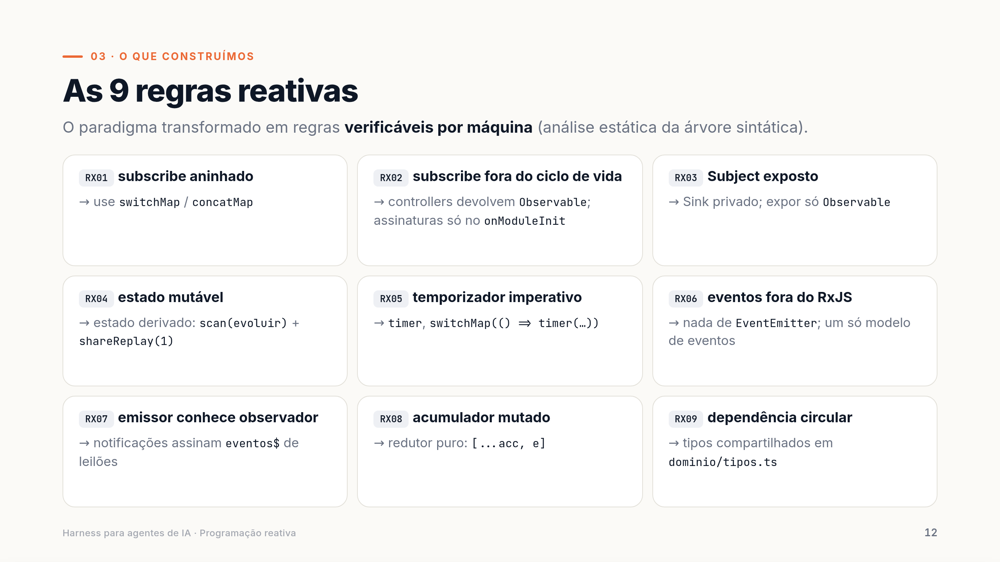
Slide 12
As 9 regras reativas
1 min
Objetivo: mostrar que o paradigma virou regras verificáveis por máquina.
Fala sugerida
“Para cobrar o paradigma, eu o transformei em nove regras que uma máquina consegue verificar. Não vou ler todas; vou destacar as três que aparecem nos resultados.
RX04, estado mutável: guardar estado num campo da classe e alterá-lo nos métodos — o oposto de derivar o estado do fluxo. RX02, subscribe fora do ciclo de vida: criar uma assinatura a cada requisição, que ninguém cancela. RX07, emissor conhece observador: leilões importando notificações, que quebra o Observer.
O verificador usa a API do compilador do TypeScript para percorrer a árvore sintática de cada arquivo.”
Limitação conhecida: por ser estático, o verificador não segue apelidos (const l = this.mapa.get(id); l.x = 1 não é detectado) e a RX07 se baseia em nomes de arquivos e caminhos. Está documentado em docs/regras-reativas.md.
O verificador tem 10 casos de teste próprios (um por regra + um de código correto), todos passando.
“E como essas regras chegam até o agente durante o trabalho?”
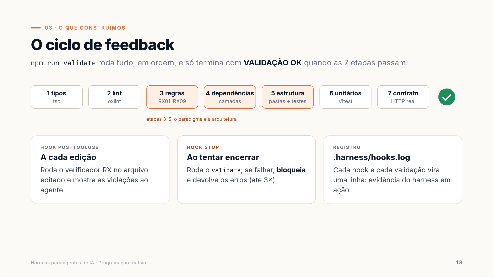
Slide 13
O ciclo de feedback
1 min
Objetivo: explicar o validate e os três hooks.
Fala sugerida
“O npm run validate roda sete etapas, em ordem: tipos, lint, regras reativas, dependências entre camadas, estrutura de pastas, testes unitários e testes de contrato contra o servidor de verdade. As etapas três a cinco são as que cobram o paradigma e a arquitetura. Ele roda todas, mesmo que uma falhe, e mostra só os erros — a saída foi pensada para um agente ler.
Os hooks fecham o ciclo: a cada edição, o verificador roda no arquivo editado; e, quando o agente tenta encerrar, o hook Stop roda o validate e, se falhar, bloqueia o encerramento e devolve os erros — até três vezes, para não virar laço infinito. Tudo isso fica registrado num log.”
O limite de 3 bloqueios é por pedido do usuário; um terceiro hook (UserPromptSubmit) zera o contador a cada novo prompt (ADR-010).
Guarde a ideia do hook “a cada edição”: nos resultados vamos ver que ele nunca chegou a disparar, e por quê.
“Com o harness pronto, falta o experimento.”
04 · O experimento
Slides 14 e 15
Como garantir uma comparação justa: desenho, controles, papéis e um instrumento validado.
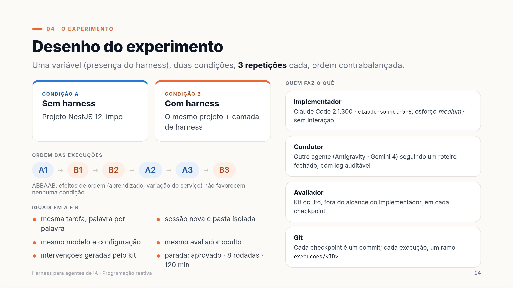
Slide 14
Desenho do experimento
1 min 15 s
Objetivo: mostrar que a única coisa que muda entre A e B é o harness.
Fala sugerida
“São duas condições. A: o agente recebe um projeto NestJS limpo. B: o mesmo projeto com a camada de harness por cima. Três repetições de cada, porque o modelo não é determinístico.
A ordem foi A1, B1, B2, A2, A3, B3 — intercalada, para que nada que mude com o tempo favoreça um lado. Tudo o mais é igual: a mesma tarefa, palavra por palavra; sessão nova numa pasta isolada; o mesmo modelo; o mesmo avaliador; e as mesmas regras de parada.
Sobre os papéis: quem implementa é o Claude Code, com o modelo Sonnet 5.5 em esforço médio, sem interação. Quem conduz é outro agente, seguindo um roteiro fechado e registrando tudo num log auditável. E cada checkpoint vira um commit no git.”
Por que um agente condutor? Uma primeira B1 foi feita pelo mesmo agente que construiu o harness e o gabarito — ele tinha a solução em contexto. Ela foi descartada (está em experimento/descartadas/) e a condução passou a outro agente (Antigravity, com Gemini 4), com o implementador rodando em sessão isolada por script.
Isolamento: cada execução roda numa pasta fora do repositório (o Claude Code lê CLAUDE.md das pastas-pai); a auditoria conferiu que nenhuma transcrição menciona o repositório principal.
Parada: aprovado (build ok, 41/41 e 0 violações), 8 rodadas de correção ou 120 minutos.
“E como medimos os erros e as violações?”
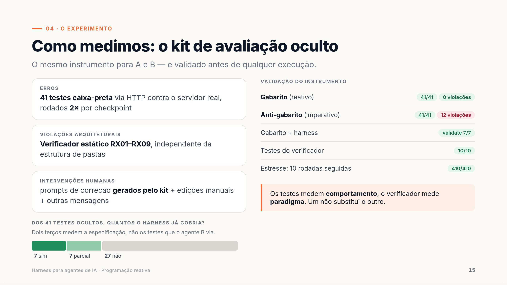
Slide 15
Como medimos: o kit de avaliação oculto
1 min
Objetivo: mostrar que o instrumento é independente do harness e foi validado.
Fala sugerida
“O kit de avaliação fica fora do alcance do agente. Erros são medidos por 41 testes caixa-preta, por HTTP, contra o servidor rodando de verdade — duas vezes por checkpoint. Violações, pelo verificador de regras. Intervenções são contadas: cada prompt de correção, gerado pelo próprio kit, conta uma.
Antes de qualquer execução eu validei o instrumento: o gabarito passa em tudo; o anti-gabarito passa nos 41 testes mas tem 12 violações; e dez rodadas seguidas deram 410 de 410.
E, importante: dos 41 testes ocultos, 27 não têm nenhum equivalente no harness. Então B não ‘decorou’ a prova.”
Prompt de intervenção padronizado: o kit escreve a revisão (testes que falharam com a mensagem, violações agrupadas por regra com “como corrigir”). O condutor só cola esse texto. Isso tira a subjetividade da revisão humana.
Cobertura do harness sobre os 41 testes: 7 cobertos (✓), 7 parcialmente (◐), 27 sem correspondente (✗).
“Agora, os resultados.”
05 · Resultados
Slides 16 a 19
O centro da apresentação. Fale devagar, aponte os números e deixe claro o que eles dizem e o que não dizem.
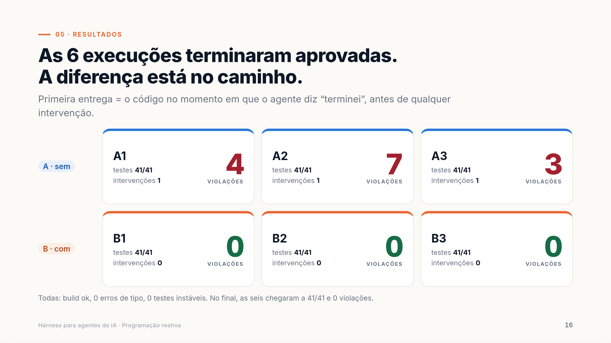
Slide 16
As 6 execuções terminaram aprovadas. A diferença está no caminho.
45 s
Objetivo: dar a visão geral — todos chegaram, mas por caminhos diferentes.
Fala sugerida
“Primeiro, a visão geral. As seis execuções terminaram aprovadas: no final, todas com 41 de 41 testes e zero violações. A diferença está no caminho.
Olhem a primeira entrega — o código no momento em que o agente diz ‘terminei’. Na linha de cima, sem harness: 41 de 41 testes em todas, mas 4, 7 e 3 violações, e cada uma precisou de uma intervenção. Na linha de baixo, com harness: 41 de 41 e zero violações nas três, sem nenhuma intervenção.”
Em todas: build ok, 0 erros de tipo, 0 erros de lint, 0 testes instáveis. Nenhuma edição manual de código e nenhuma mensagem extra (“continue”) foi necessária.
“Vamos olhar as violações de perto.”
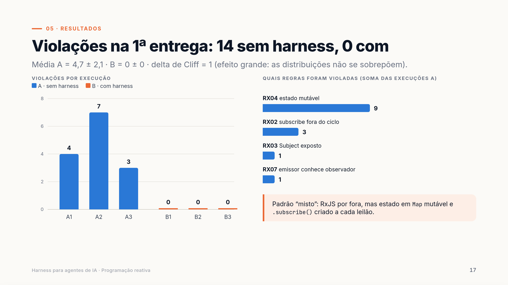
Slide 17
Violações na 1ª entrega: 14 sem harness, 0 com
1 min
Objetivo: mostrar o tamanho do efeito e quais regras o agente violou.
Fala sugerida
“Somando as três execuções sem harness, foram 14 violações; com harness, nenhuma. Em média, 4,7 contra zero.
À direita, quais regras: a campeã é a RX04, estado mutável, com 9 ocorrências — this.leiloes.set(...), this.notificacoes.set(...). Depois a RX02, com 3 — uma em cada execução A —, que é criar um subscribe novo a cada leilão para agendar o encerramento. E uma RX03 e uma RX07, ambas na A2.
O padrão foi sempre ‘misto’: o agente usava RxJS por fora — tinha Subject, switchMap, timer —, mas guardava o estado em Map mutável. Ele sabe RxJS; o que faltava era a arquitetura.”
Delta de Cliff (resposta pronta): mede o quanto duas distribuições se separam, de −1 a +1. É a proporção de pares (a, b) em que a > b menos a proporção em que a < b. Deu 1: todo valor de A é maior que todo valor de B — não há sobreposição. Pelos limiares de Romano et al. (2006), é efeito “grande”. Foi escolhido porque não supõe normalidade e serve para amostras pequenas.
“Isso teve consequências no esforço humano e no esforço do próprio agente.”
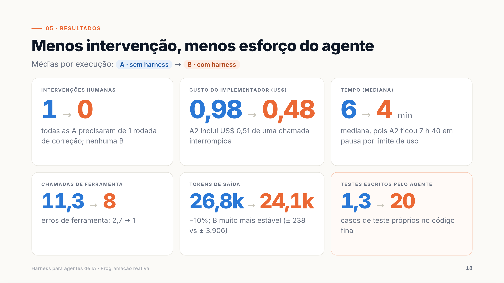
Slide 18
Menos intervenção, menos esforço do agente
1 min
Objetivo: mostrar os ganhos secundários (custo, tempo, testes) com honestidade sobre as distorções.
Fala sugerida
“Intervenções: de uma para zero. Custo do implementador: em média 98 centavos de dólar sem harness contra 48 com. Tempo mediano: de 6 para 4 minutos. O agente também usou menos ferramentas, errou menos ao usá-las e gastou cerca de 10% menos tokens — e com muito menos variação entre execuções.
E o número que mais me surpreendeu: com harness, o agente escreveu em média 20 casos de teste próprios; sem harness, 1,3. Duas das três execuções A não escreveram nenhum teste.”
Use a mediana do tempo, não a média. A A2 parou por limite de uso da conta (erro 429) das 12:28 às 20:08: o relógio marcou 467 min, mas o trabalho ativo do implementador somou 255 s. Isso infla a média de A para 159 min.
O custo da A2 (US$ 1,50) inclui US$ 0,51 da chamada interrompida pelo limite.
Por que tanto teste em B? O harness exige teste unitário para cada arquivo do domínio (regra E02 do verificador de estrutura). É efeito do harness, não acaso.
“E o código em si ficou diferente?”
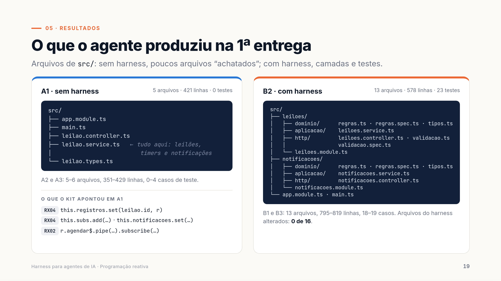
Slide 19
O que o agente produziu na 1ª entrega
45 s
Objetivo: tornar visível a diferença de organização do código.
Fala sugerida
“À esquerda, a A1: cinco arquivos, tudo de leilões, temporizadores e notificações dentro de um só leilao.service.ts, e nenhum teste. Embaixo, o que o kit apontou: os Map sendo alterados e o subscribe criado a cada leilão.
À direita, a B2: treze arquivos, dois módulos, cada um com domínio, aplicação e HTTP, testes ao lado do domínio. E um detalhe de integridade: o agente B não alterou nenhum dos 16 arquivos do harness — não ‘afrouxou’ nenhuma regra para passar.”
Linhas de código no final: A ≈ 523 em média, B ≈ 731 (+40%). Mais código em B não é problema aqui: é a separação em camadas, os módulos e a validação de entrada.
Depois da intervenção, as A também migraram para scan e assinaturas no onModuleInit — o agente sabe fazer; precisava ser cobrado.
“Para fechar, o que fica.”
Conclusão
Slides 20 e 21
Feche com as três lições e abra para perguntas.
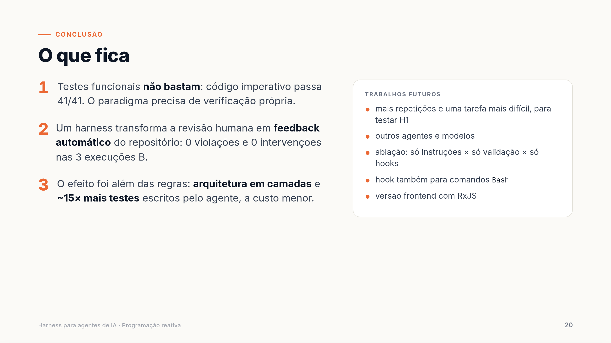
Slide 20
O que fica
45 s
Objetivo: deixar três lições claras e apontar caminhos futuros.
Fala sugerida
“Três lições. Primeira: testes funcionais não bastam — código imperativo passa 41 de 41. Se o projeto tem um paradigma, ele precisa de verificação própria. Segunda: um harness troca a revisão humana por feedback automático do repositório — zero violações e zero intervenções nas três execuções com harness. Terceira: o efeito foi além das regras: arquitetura em camadas e cerca de quinze vezes mais testes escritos pelo agente, a um custo menor.
Como próximos passos: mais repetições e uma tarefa mais difícil, para testar de novo a H1; outros agentes e modelos; uma ablação, para separar o efeito das instruções, da validação e dos hooks; um hook que também veja comandos de terminal; e uma versão frontend.”
“Obrigado.”
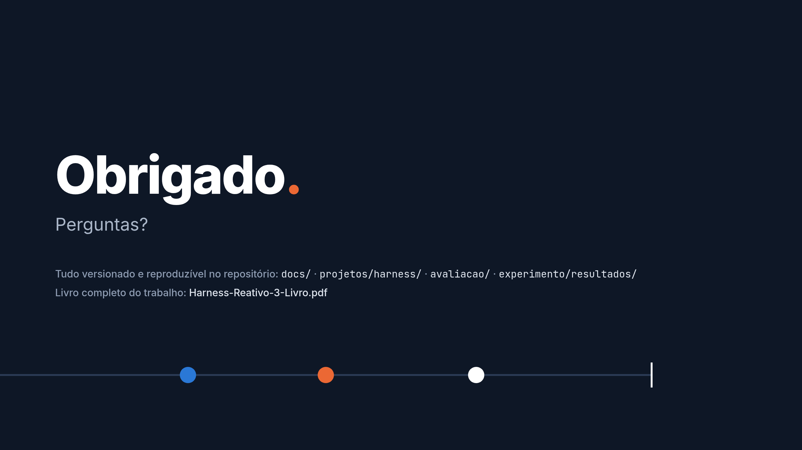
Slide 21
Obrigado · Perguntas
—
Objetivo: abrir para perguntas e indicar onde está todo o material.
Fala sugerida
“Obrigado. Tudo está versionado no repositório: a documentação, o harness, o kit de avaliação, os registros de cada execução e os resultados. E o livro do trabalho detalha cada etapa. Fico à disposição para perguntas.”
Perguntas prováveis
Respostas prontas
Perguntas que o professor ou a turma podem fazer, com uma resposta curta baseada nos dados do trabalho.
“Se todos passaram nos testes, qual o problema do código sem harness?”
Ele funciona, mas não segue o paradigma pedido nem a arquitetura do projeto: estado mutável espalhado, assinaturas que ninguém cancela, módulos acoplados. É o tipo de dívida que um revisor teria que apontar — e foi o que o kit apontou, uma vez em cada execução A.
“Não é injusto o harness ensinar exatamente as regras que você mede?”
É uma ameaça declarada. Mas é justamente o que se quer saber: um projeto real tem regras; a pergunta é se colocá-las no repositório faz o agente segui-las sem um humano cobrar. Para os erros funcionais, a medida é independente: 27 dos 41 testes ocultos não existem no harness.
“Por que a H1 não deu diferença?”
Porque as seis execuções passaram nos 41 testes já na primeira entrega. Para esse modelo, a especificação foi clara o bastante. Uma tarefa mais difícil, ou um modelo menor, poderia separar as condições — é um trabalho futuro.
“Três repetições é pouco, não?”
É, e por isso a análise é descritiva, sem teste de significância. O que dá alguma confiança é a consistência: as três A tiveram violações (3 a 7) e as três B nenhuma — distribuições sem sobreposição (delta de Cliff = 1).
“O agente B poderia ter visto os testes ocultos ou o gabarito?”
Não. Cada execução rodou numa pasta fora do repositório, com git próprio; a auditoria procurou o nome do repositório nas transcrições e não encontrou nenhuma ocorrência. A primeira B1, feita por um agente que tinha o gabarito em contexto, foi descartada justamente por isso.
“Por que a A2 demorou 467 minutos?”
A conta atingiu o limite de uso (erro 429) durante a intervenção; a condução ficou pausada das 12:28 às 20:08 e a chamada foi repetida tecnicamente, sem contar como nova intervenção. O trabalho ativo do implementador na A2 somou 255 segundos. Por isso uso a mediana do tempo.
“O hook pós-edição não disparou. Então o harness não funcionou?”
Funcionou, mas por outras peças: as instruções (o agente já organizou o código nas camadas pedidas) e o npm run validate, que o agente rodou por conta própria e que o hook Stop rodou ao final. O hook pós-edição não disparou porque os arquivos foram escritos via terminal (Bash), e ele só observava as ferramentas Edit e Write.
“O que é o delta de Cliff?”
Uma medida de tamanho de efeito não paramétrica: compara todos os pares (um valor de A, um de B) e calcula a proporção em que A > B menos a proporção em que A < B. Vai de −1 a +1; 1 significa que todo valor de A supera todo valor de B.
“Por que scan e não um Map com cuidado?”
Com scan, o estado é uma função do histórico de eventos: um comando por vez, em ordem, sem condição de corrida, e qualquer projeção nova (notificações, SSE) é só mais um ouvinte. Com Map, o estado é alterado em vários pontos e cada novo interessado exige mexer no emissor.
“Quanto custou o experimento?”
Somando o implementador: A1 US$ 0,68; A2 US$ 1,50 (com US$ 0,51 da chamada interrompida); A3 US$ 0,76; B1 US$ 0,47; B2 US$ 0,47; B3 US$ 0,49.
“Por que NestJS 12 veio com AGENTS.md?”
O gerador oficial do NestJS 12 já cria AGENTS.md, CLAUDE.md e skills para agentes. Eu removi tudo da base (ADR-004) para que a condição A fosse de fato sem harness. É um sinal de que o próprio ecossistema já está adotando a ideia.
Checklist antes de apresentar
Abrir o PDF dos slides em tela cheia e testar a passagem com o controle/teclado.
Ter este roteiro impresso ou num segundo dispositivo.
Ensaiar uma vez cronometrando: a meta é ~19 minutos.
Ter à mão, se houver tempo para demonstração: experimento/resultados/resultados.md e um harness-hooks.log de uma execução B.